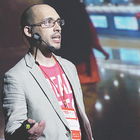
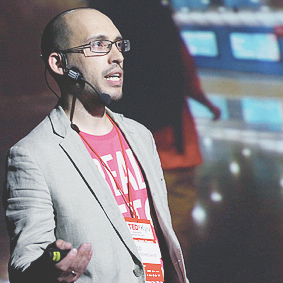

- 2009.
- 2010.
- 2011.
- 2012.
- 2013.
13 жовтня 2012 TEDxCity2.0.
-


Віктор ЗотовДієта для здорового міста
-


Ольга ГужваРабота со страхами в городской среде
-


Ірина Соловей, Олександр СупрунецьСпiльнокошт
20 травня 2012 TEDxKyiv 2012. ТАЛАНТИ. ОСВІТА. РОЗВИТОК.
-


Олексій ГрєковПеревинаходячи школу
-


Іван МалковичРозвиток таланту
-


Alexei KapterevWord-class Self-education
-


Євген ПенцакЯкою повинна бути добра освіта?
-


Наталя ШульгаВід наївності до свідомості
-


Дмитро ДзюбаМайбутнє нейронних мереж
-


Анатолій БондаренкоЖурналістика даних
-


Марія БашликВибір для наших дітей
-
 

Ігор СкляревськийМіська навігація
-


Лілія МлинаричФеномен фестивалю
-


Павло ШереметаУспіх-2012
-


Анна ПетроваГоловне-робити
-


Валерій ПекарТаланти і суспільство
-


Ольга БогомолецьІти у майбутнє